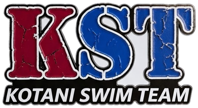
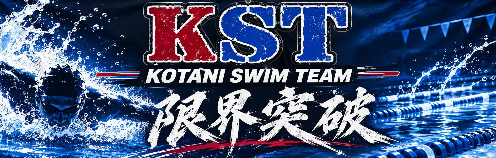

小谷スイムチーム
小谷スイムチーム（KST）は、和歌山県で幼少期から競泳に打ち込んできた同世代メンバーによるOB・OGチームです。高校・大学で競技を引退してから5〜10年。30歳という節目に再会し、チームを再結成しました。
現役時代はそれぞれの種目で県内トップレベルを争ったメンバーたち。今は仕事も体型もそれぞれ、練習もほぼしていません。それでもスタート台に立てば、あの頃の感覚が少しだけ戻ってきます。
私たちが泳ぎ続ける姿を通じて、和歌山県の水泳を少しでも盛り上げること。それがKSTの目標です。
| 種目 | 距離 | 記録 | 記録保持者／リレーメンバー | 日付 | 大会名 |
|---|